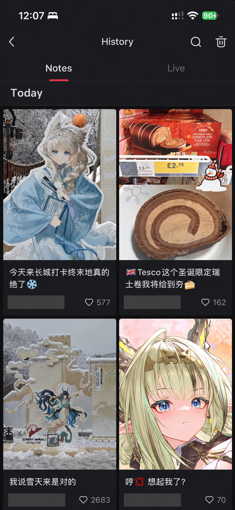
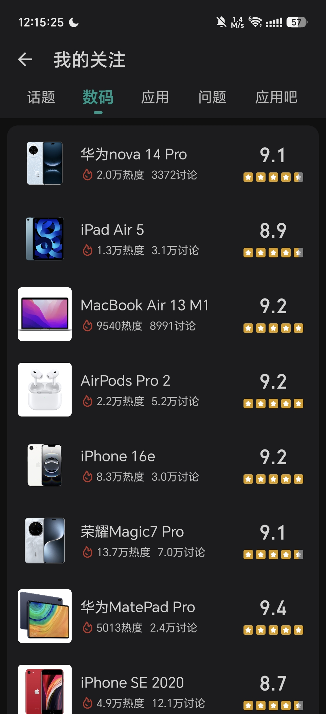
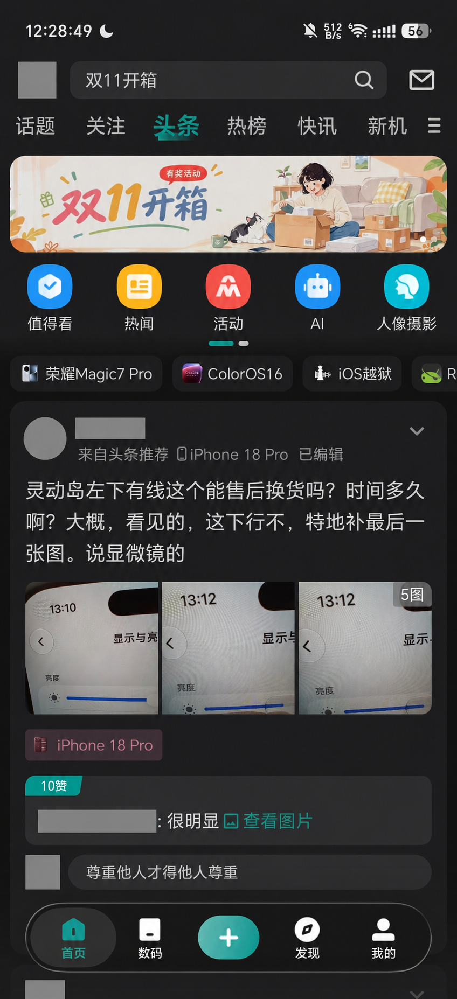
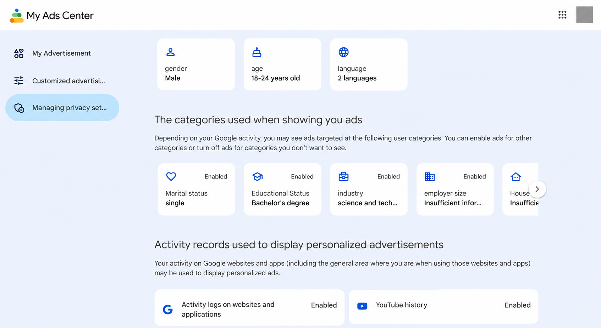
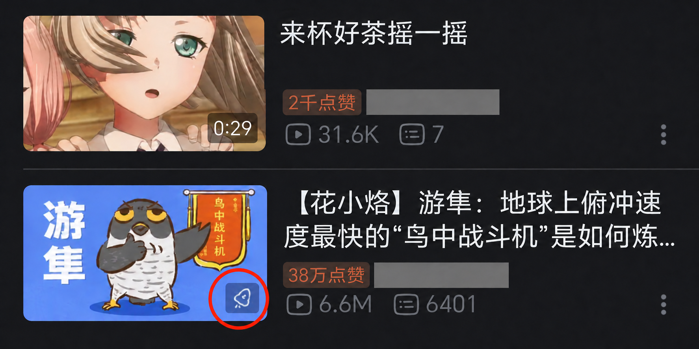
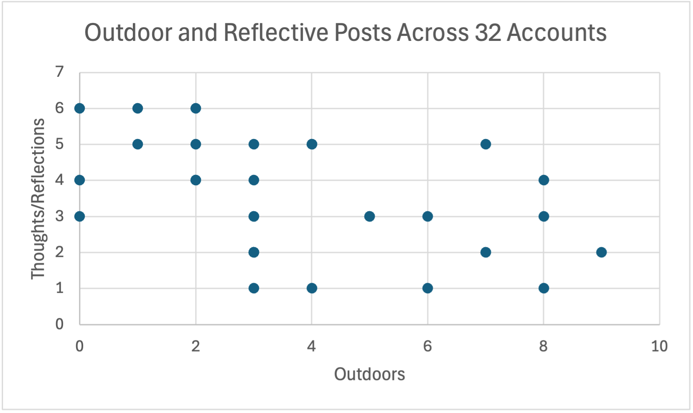

Week 6: Algorithmic Identity
This week's workshop made me start thinking about what data platforms use to understand me, and how much that data can represent a person. When using social media, I usually pay more attention to what I see than to the records I leave behind.
I noticed that I use different platforms in different ways. On Rednote, I mainly look at lifestyle posts about shopping, food and everyday experiences, as well as some gaming content. I spend more time reading and saving posts than posting myself. On Coolapk, I mainly follow digital products such as phones, tablets, computers and earphones, but I also read practical tips and everyday discussions. These records show different interests of mine.




These differences were also noticeable when I looked at the platforms' outputs. Rednote's AI assistant, Dots, generated a personal summary describing me as someone who likes saving posts but rarely posts. It made me notice that browsing and saving leave records even when I do not publish much myself. Coolapk's output was more directly visible in its recommendations. For example, my homepage recommended a post discussing a phone screen problem and getting a replacement through after-sales service, which was close to the digital content I usually follow. Google's My Ads Center described me using categories such as age, education and industry. These three outputs are a personal summary, content recommendations and advertising categories. They are not exactly the same thing, but they all showed me different ways that platforms represent me.





I also encountered some difficulties accessing and understanding this data. Not every platform provides a personal summary that I can read directly, like Rednote's Dots. I originally wanted to explore my Bilibili account, but its personal summary is only available through the year-end Annual Report feature. For now, I can only look at homepage recommendations to guess how the platform understands my interests. However, from my experience, Bilibili has paid promotion features, and unrelated content sometimes appears on my homepage. I have not found a way to turn off these recommendations completely. This makes me feel that homepage content cannot simply be treated as a profile of my interests, since it may also be influenced by commercial promotion.


For the categorisation task, I selected 32 Rednote accounts and counted their posts using the categories provided by the tutor. Some of these accounts belong to friends I know in real life. I noticed quite a difference between what they share on Rednote and what I know of their everyday lives. Although the table included many categories, some posts were still difficult to place. Some contained only a selfie with no clear topic, while question posts could relate to everyday life, work or other subjects. Since each post could only go into one category, I had to decide which topic was the main one. This showed me that categorisation is not simply a matter of filling in a table. It also involves my own interpretations and choices.
After categorising the posts, I used a scatter plot to compare Outdoors and Thoughts/Reflections. The horizontal axis shows how many of each account's latest 15 posts I placed in Outdoors, and the vertical axis shows how many I placed in Thoughts/Reflections. Each point represents an account. The graph shows differences in posting habits, but these two numbers cannot tell me the specific content of the posts or explain why people published them.


I do not think these categories can accurately represent someone's whole identity. Some people do not use Rednote as their main platform for sharing and may only post one type of content there, making their results look quite narrow. This does not mean their lives or interests are equally narrow. The chart mainly reflects these accounts' posting habits on this platform over a recent period. Not posting outdoor content does not mean someone dislikes outdoor activities. I therefore cannot judge what a person is like just from their position on the graph.
This reminded me of the lecture's discussion of how identity develops through different situations and interactions, while platforms turn people's activities into data and categories they can process. I leave different records on different platforms, so the versions of me they present also differ.